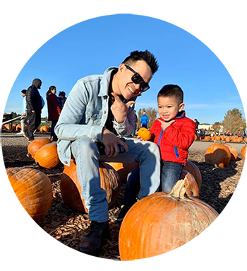

Pho 7 Simmering Soup
Popularizing the taste of Vietnamese cuisine since 2010
Pho 7 is a Vietnamese family restaurant based in the Greater Seattle area. Chef Tho Nguyen, the owner and manager, has been delivering tasty food and good customer service for almost 10 years, ever since the restaurant was a small, 1-person operation back in 2010. Based in the melting pot of different culture and a diverse demographic - the Pacific Northwest - Tho has been continually improving and adapting his craft to introduce Vietnamese food to the taste of many new guests with different dietary preferences.
Being a first-generation immigrant and having come to America since he was very young, he chooses Pho as the main dish of his restaurant because of its intertwining history that represents his identity. Pho was born in Northern Vietnam during the late 19th century. After years of being colonized, this Vietnamese dish was the union of French, Chinese, and Vietnamese cooking. Refugees fleeing Vietnam after the war brought with them their cultures and cuisines, but also their hopes and dreams of a better, more peaceful life. Tho wants his guests to immerse themselves in both the taste and history of this seemingly simplistic dish.
In 2015, Huong joined the family and the couple has been splitting their time between managing the restaurant 12 hours a day and making times for their two adorable toddlers. Their bright smiles, friendly nature and colloquial conversations have made Pho 7's frequent visitors the strongest supporters of their business. Tho and Huong know most of their customers and sometimes get to cooking their usual orders even before the customers start placing them! Swing by the restaurant and say hi, chances are you will become part of the family in no time.